Features
Woodwinds
Departments
Csound Implementation of Physical Models of Woodwind Instruments
Josep Mª Comajuncosas Nebot
Introduction
Basic implementation
the reed
the clipping routine
coupling the reed with the bore
the bore
the tonehole reflection filter
Csound minutiae
the player and the instrument
integration scheme
filters and delay lines
legato notes : the dual bore structure
recoding all the stuff with Macros
MIDI and Score implementations
Some working examples
The clarinet : single reed cylindrical woodwind
Grallot : a double reed clarinet
the tuning problem
Future work
conical bores and mouthpieces
defining playing styles
Bibliography
Introduction
The motivations behind this work came from an article I read a year ago in the Journal of New Music Research, vol. 24 (1995): "Physical Models of Wind Instruments : A Generalized Excitation Coupled with a Modular Tube Simulation Platform" by Gijs de Bruin and Maarten van Walstijn.
Later on I contacted Maarten at the Edinbugh University and he helped me with this implementation, giving details, suggestions and improvements. I´m much indebted to his friendly collaboration to make this project and this article possible.
The extension to double reed instruments is based on the work of Ana Barjau (Universitat Politecnica from Barcelona) relating the modelling af the Tenora, a catalan tenor shawn.
Most of the Csound implementation is biased towards the clarinet by now, and most of the given examples will be from my last clarinet model, which can be found on my Csound page at
http://members.tripod.com/csound/
My aim is to build a nice collection of virtual woodwind instruments of great quality to use them in my Csound compositions. In this article I summarize the current progress of the implementation and two already functional models are presented : a clarinet and the Grallot (a sort of doublereed clarinet).
Basic implementation
the reed
One of the main differences between this woodwind model and the ones implemented in the Csound sources - from P. Cook´s Synthesis Toolkit - is the simulation of the reed nonlinearity.
Instead of a memoryless nonlinearity implemented as a lookup table, here a dynamic model of the reed is employed, which takes into account air inertia and reed beating.
The equations used to describe the reed motion and the flow through the reed aperture are shown here.
The reed is itself considered as a harmonic oscillator driven below its resonance frequency, that is, for cane reeds
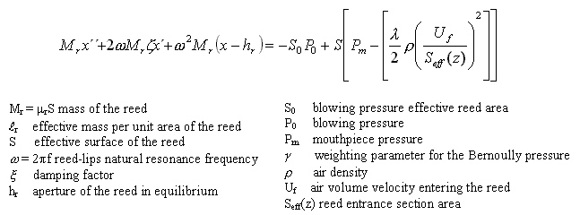
which after some simplification and cosmetics becomes
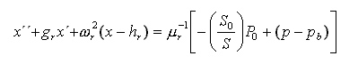
I refer you to the bibliography and the Csound code for a complete description of all the parameters involved. The Bernoully pressure (pb) takes an important role in double reeds but is neglected in clarinet-type single reeds.
Notice this equation assumes that the reed-lips damping and stiffness is constant and equal to their value with the reed at equilibrium. This simplification seems to work well enough, but those parameters have a decisive infuence on the timbre and the tuning of the instrument and could be considered variable for expressivity or fine tuning purposes.
The flow entering the reed as function of the reed aperture and the pressure difference between the mouth and the mouthpiece is assumed to obey Backus equation for single reed instruments
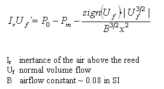
and a modified Backus equation for double reeds, taking into account the different reed geometry
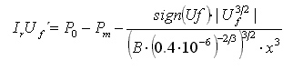
(0.4e-6 is the reed aperture in equilibrium for a clarinet, the instrument in which Backus measurements were done). I´ll possibly experiment with another set of equations described in the revised Nederveen´s thesis.
Those equations are solved in the time domain using a custom integration scheme described later in this article.
the clipping routine
Notice that at very small reed apertures (when playing hard) the Backus equation is no longer valid and can lead to large numerical errors. Also, the reed aperture cannot go to zero as in a real instrument. To overcome that problem several strategies have been proposed, like desining different computing zones according to the reed aperture.
A cheaper solution is proposed here. One could truncate the reed aperture to an arbitrary small (but not 0) value, but this produces very artificial overtones (MP3). This is logical as we are hard clipping the signal.
A soft clipping routine is preferred instead. I first tried a tanh() function but it tended to close the reed too much. As suggested by Maarten van Walstijn, I implemented a new routine in which the clipping function consists of two lines that are interpolated by a circular segment. It has several nice properties, like allowing gradually higher harmonic richness at higher playing pressures (MP3),
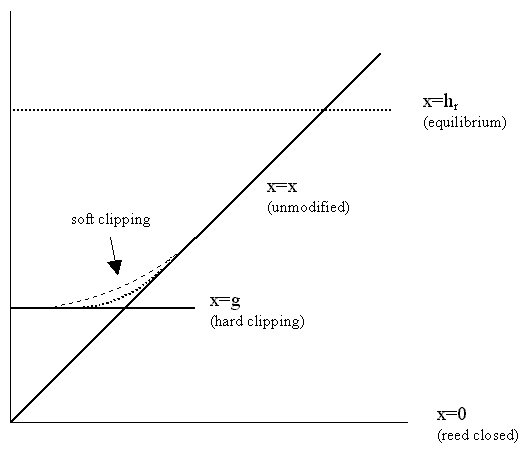
allowing overblowing (MP3) and being parametrizable. This is vital because the reed clipping has a strong effect on the sound and makes possible a large variety of reeds and playing styles. This clipping routine can be considered as a phenomenological model of the reed curling up the mouthpiece.
coupling the reed with the bore
To couple the reed with the bore one must be able to compute the outgoing pressure (p right) which will be the value injected into the waveguide, from the flow Ub and the ingoing pressure (p left).
The total flow Ub coming into the bore equals the normal volume flow Uf already computed plus an extra flow produced by the reed movement itself
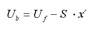
According to Nederveen this term behaves like a virtual volume added to the mouthpiece cavity and one has to compensate for it when computing the total delay time of the waveguide.
We can now relate flow and pressure with the well-known formula
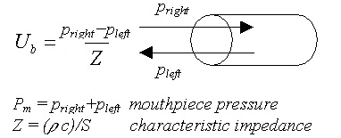
the bore
The bore is implemented as a recursive comb filter. Specifically, the current implementation is simple enough (i.e, a single cylindrical bore without a tonehole lattice) to allow a special implementation which makes use of a single waveguide of double length (half the wavelength of the desired note in the case of an open/closed cylinder) to simulate the upward and inward travelling waves. This method is similarly implemented in R. Cook´s woodwind and stringed instruments.
the tonehole reflection filter
Assuming that most of the radiation coming out of the clarinet is due to the first open tonehole, we can neglect the rest of the bore and derive the reflectance and transmittance filters from a generic clarinet tonehole and apply it to all pitches, as if the clarinet was a sizeable cilinder with the tonehole at the end of the bore.
Of course the subtle differences between the clarinet pitches are lost, but as a first approximation the result is acceptable.
The filter design routine has been implemented in Matlab by Maarten van Walstijn and matches the frequency and phase response of the theoretical tonehole response according to D.Keefe´s tonehole models. The frequency response of the reflection filter has a lowpass shape with a cutoff frequency of about 1,5 kHz, which agrees well with Keefe´s measurements.
The transmittance filter is derived by performing a digital lowpass to highpass transformation to the reflection filter.
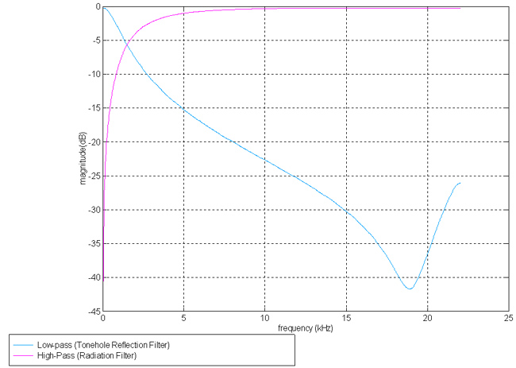
The phase response of the refletance filter is taken into account when computing the total delay length, compensating for it in the main delay line.
The final bore structure as shown below includes the main waveguide together with the tonehole reflection filter and a fractional delay filter to fine tune the delay length. Notice that the transmittance filter is outside the feedback mechanism and thus could be parameterizable (for tone and brightness control) without undesired effects on the tuning (MP3)
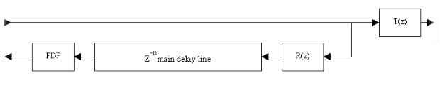 TOP
Csound minutiae
the player and the instrument
As the aim is to accurately model an instrument it is conceptually advisable to split the code into 2 Csound instruments. The first one works as the player, that is, it is activated at each new event and sends the appropiate performance values (such as flow and reed parameters, pitch, volume and so on) to the second instrument.
The second one, which is left active throughout the performance, is the implementation of the model itself.
The communication between both instruments is held via zak variables.
integration scheme
The system of equations describing the reed motion and the air flow through it are integrated as follows: first integrate the reed motion (2nd order ODE) with the Euler method. Thus we will get the reed aperture.
Then integrate the Backus flow equation with Euler again and solve the resulting first order differential equation with the Newton-Rhapson iterative method, initialising with the previous value obtained. No more than 3 iterations seem to be necessary for convergence.This last equation will give you the flow coming into the bore.
All these equations are explicitely coded in the orchestra, as there are not yet opcodes to automatically perform such integrations. Some other integration schemes could be experimented, but according to the bibliography this is the one offering faster convergence and better stability.
filters and delay lines
The filters employed to implement the tonehole (reflectance and transmission filters) are designed with Matlab as 1st or 2nd order sections and thus can be implemented in Csound with the biquad opcode. Though rather simple they approximate very well the actual tonehole response and allow an analytic computation of their phase delay, which is used to fine tune the instrument.
The fractional delay filter is implemented as a simple interpolator (a first order Lagrange interpolator) but I´ll soon implement it as a 3rd order FIR filter with the filter2 opcode, which should minimize the high frequency losses.
The delay line is implemented as a delayr/delaw pair, from where I extract the precise sample with the deltapn opcode. Notice a cubic interpolation could be possible without the explicit use of filter opcodes, making use of the new deltap3 opcode. I avoided it because I´m not sure if it is reliable enough.
legato notes : the dual bore structure
Because the woodwind is left active during the performance, it is possible to deal with legato notes quite easily.
The problem with the current implementation is that the pitch is not determined by a combination of open and closed holes, instead, one changes the length of the main delay line simulating the bore.
Changing the pitch in a legato fragment could be done by shortening or enlarging the bore like in a slide flute, but this glissando sounds unnatural and causes the volume to increase during the note transition.
The solution was to implement a second bore running in parallel with the first. At each new event the bore is switched with an appropiate crossfade time. The crossfade is not linear but sigmoidal, though the difference is subtle. The result is not unlike the transition time needed to change the fingering in a real instrument. 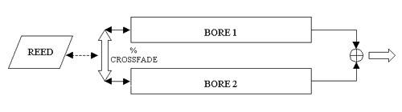
I found that the optimum transition time depends on the note frequency and the speed of the fragment to be played. If it is too low a glissando is heard and the note takes longer to oscillate at the expected amplitude, if too short, the abrupt transition will cause noticeable clicks.
recoding all the stuff with Macros
More recently I decided to recode the instruments making use of the new Macro functionality. Thus the woodwind is built in a modular way: reed + bore + tonehole. The reed itself, for example, also includes macro calls showing its internal structure : reed motion + clipping routine + flow equation. Hopefully the code is more readable this way. Also it makes it easy to change part of the code, to apply it to different designs and eventually to port all the stuff to C++ or viceversa (that´s what I´m actually doing with Maarten´s C++ implementation of the clarinet).
MIDI and Score implementations
Both a MIDI and a Score activated orchestra will have the "instrument" identical, but the "player" code will differ depending on how the event is activated.
A Score implementation has the advantage of knowing in advance the duration of the events, which can be a criterium to choose the optimum playing parameters.
A MIDI implementation is possible, however the instrument is quite computationally intensive and will demand a powerful machine to run in real time.
Notice also that the legato feature makes it monophonic. Each new event is assumed to be the next note of the melody. To play polyphonic sequences, simply set different instrument pairs in the orchestra code, taking care of the zak variables, and call them accordingly.
Some working examples
The clarinet : single reed cylindrical woodwind
Usually the clarinet is a good candidate to begin this kind of modeling, because of its relative simplicity : a nearly cylindrical bore with a small bell which can be neglected for most pitches, and a single reed is much simpler to model than the saxophone´s. The clarinet mouthpiece can also be neglected at a first approximation without so much discrepancy as in the sax.
Notice that, similar to a real clarinet, the model has a playing extension which is limited both by the reed resonance frequency and especially by the frequency cutoff of the tonehole filter. In other words: it cannot reach higher pitches than the real instrument, but there is no problem with lower ones.
After the appropriate corrections, the instrument is surprisingly well tuned. A drawback is that with the same input pressure higher notes sound pale and dull, presumably because they would demand a higher lips pressure, or better, using the 12th instead of the fundamental tone. I´ll try to fix that soon.
| MIDIfied Clarinet (old code): orc & sco files in zip format |
| Clarinet (improved .sco version) : orc & sco files in zip forma |
Grallot : a double reed clarinet
This instrument is my first nearly successful implementation of a double reed, which is far more complicated because of the higher Bernoulli pressure caused by the small reed apertures and the more pronounced beating regime.
It is coupled to a cylindrical bore, which is not common in the real doublereed instruments, usually of conical shape.
The implementation is based on an older code of my clarinet model, so it doesn´t yet include macros and some other refinements. Think of it as a clarinet with a double reed rudely attached to it.
the tuning problem
Despite taking into account all the parameters infuencing the pitch -those related to the (frequency dependent) phase delay caused by the tonehole reflectance filter, the (constant) delay induced by the extra flow in the reed motion equation, and the fractional delay filters- the instrument can be completely out of tune sometimes. This was notorius in my Grallot, probably because I neglected some crucial parameters (or there could even be a serious mistake somewhere !).
A way to overcome the problem and make the instrument more responsible to the player reactions is to couple its output to a pitch tracker, as I did in the Grallot.
The pitch tracker is implemented with the pitchamdf opcode. It automatically readjusts the main delay line lenght in order to get the desired pitch:
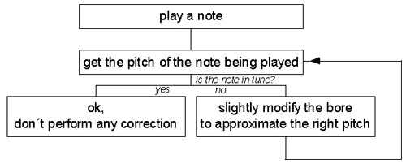
It is advisable to store a fairly good approximation of the correction needed for all the pitch range in a table to initialize the tracker with a good value and minimize the initial glissando, otherwise it will sound as much grotesque as my Grallot !
This routine is so robust that it even kills the vibrato I added for more naturality. It would be better either to have certain tolerance or even better, deactivate the tracker once the right pitch has been reached and no glissandos are expected.
A more physical behaviour could be to change the pitch with the lips pressure, something the real players do all the time.
| Grallot mp3 example Grallot orc & sco files in zip format |
Future work
conical bores and mouthpieces
Implementing piecewise conical waveguides is the next step in the model, to be able to design bores of arbitrary shape. It is well known that implementing conical sections can lead to numerical instabilities and Csound could not work wery well until double precision is implemented.
Related to this a mouthpiece model would be desirable for the clarinet, anticipating a much harder work for the saxophone family.
Modelling a whole tonehole/register hole lattice might well be an exhausting experiment and I leave it for the future, as well as implementing the bell with the new Truncated IIR filters.
defining playing styles
Once you have a very accurate woodwind instrument, sensitive to all the playing parameters such as lips and mouth pressure, flow pressure, fingerings, etc. how do you play such a beast with a MIDI keyboard or even worse, with a numerical Score written by hand?
A good woodwind model needs also a good player, possibly a player model which should automatically take some obvious decisions, such as the optimum attack and pressure for each pitch (I´m already working on this), and eventually store a palette of standard playing styles like legato, non legato, stacatto, hard, soft playing, crescendo notes, vibrato notes and so on.
Some serious research is needed to "code" someway these playing styles.
This way the instrument could be reasonably playable even from a keyboard or an algorithmic composition software, without the need of capturing real live parameters from a performance. Josep Mª Comajuncosas Nebot
september 1999 TOP
Bibliography
A. Barjau, J. Agulló: Calculation of the Starting Transients of a Double-reed Conical Woodwind. Acustica, vol.69 (1989)
A. H. Benade: Fundamentals of Musical Acoustics. Second edition. Dover publications, NY 1990.
Gijs de Bruin, Maarten van Walstijn: Physical Models of Wind Instruments : A Generalized Excitation Coupled with a Modular Tube Simulation Platform. Journal of New Music Research, vol. 24 (1995)
M. Pavageau: Synthèse d´un modèle physique d´anque double. Rapport du stage D.E.A. d´Acoustique Appliqué de l´Université du Maine. Septembre 1993
C. J. Nederveen: Acoustical Aspects of Woodwind Instruments.Revised edition. Northern Illinois University Press. DeKalb 1998